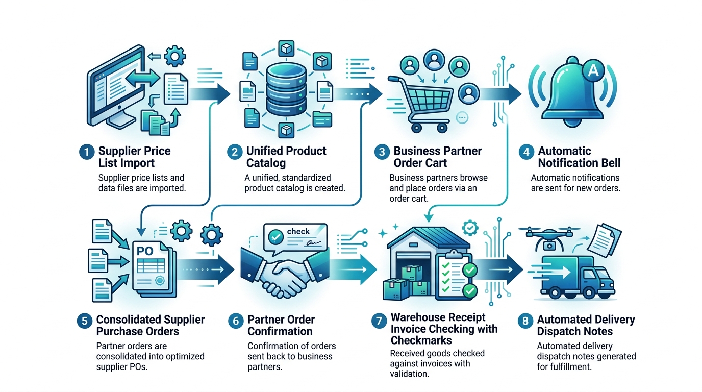

Manual de Usuario - Rosario Compras
1. Introducción y Objetivo
Rosario Compras es una plataforma de compras comunitarias y abastecimiento inteligente diseñada para conectar a comercios gastronómicos, hoteleros y comerciales (Socios) con grandes distribuidores y fabricantes (Proveedores), bajo la coordinación del Ejecutivo de Cuentas.
El objetivo principal del sistema es:
- Eliminar el error humano: Los socios cargan sus pedidos de forma digital y el sistema consolida automáticamente las cantidades totales exactas.
- Asegurar mejores precios por escala: Agrupa la demanda de múltiples socios para negociar precios mayoristas.
- Garantizar doble control de recepción: Audita precios facturados (Compras) y mercadería recibida (Logística) antes de despachar remitos.
2. Roles y Credenciales de Acceso
El sistema cuenta con 3 roles con permisos estrictamente diferenciados:
| Rol | Nombre / Comercio | Email de Acceso | Contraseña | Permisos en el Sistema |
|---|---|---|---|---|
| admin | Administrador General | admin@rosariocompras.com |
admin123 |
Acceso total a todos los módulos y auditoría. |
| ejecutivo | Ejecutivo de Cuentas | ejecutivo@rosariocompras.com |
account123 |
Importar listas, consolidar pedidos, exportar órdenes a proveedores, registrar comprobantes y reparto. |
| socio | Café Central (Socio 1) | socio1@rosariocompras.com |
socio123 |
Cargar pedido por proveedor, recibir notificaciones y consultar remitos. |
| socio | Panadería La Rosa (Socio 2) | socio2@rosariocompras.com |
socio123 |
Cargar pedido por proveedor, recibir notificaciones y consultar remitos. |
| socio | Restaurante Italia (Socio 3) | socio3@rosariocompras.com |
socio123 |
Cargar pedido por proveedor, recibir notificaciones y consultar remitos. |
3. Diagrama del Circuito Operativo

4. Guía Paso a Paso para el Socio
socio1@rosariocompras.com) y contraseña (socio123).5. Guía Paso a Paso para el Ejecutivo de Cuentas
Módulo 1: Listas de Proveedores (Catálogo Único)
- Selecciona el Proveedor en el combo desplegable.
- Puedes presionar "📧 Solicitar Lista al Proveedor" para asentar la solicitud formal de precios.
- Cuando recibas el archivo del proveedor, presiona "Seleccionar Planilla (.xlsx / .csv)". Verás una previsualización de las columnas y precios.
- Presiona "📥 Procesar e Importar al Catálogo Único". El sistema actualizará los precios y emitirá un aviso masivo a todos los socios.
Módulo 3: Consolidación y Envío a Proveedores
En este módulo se suman automáticamente los pedidos de todos los socios:
- Revisa la tabla con el resumen de demanda agrupada por artículo y proveedor.
- Presiona "Órdenes por Proveedor (.xlsx)" para exportar un archivo de Excel individual por cada proveedor (listo para adjuntar y enviar por email/WhatsApp).
- Presiona el botón azul "📤 Enviar a Proveedores y Consolidar". Los pedidos pasarán a estado Consolidado y los socios recibirán la notificación de envío.
Módulo 4: Recepción de Mercadería y Reparto Automático
- Llegada del camión/proveedor: Ingresa el número de Factura o Remito (ej.
FC-A-0001-0004521). - Doble Control:
- Control de Logística: Verifica o ajusta la columna "Cant. Recibida (Logística)" según lo que realmente llegó al depósito.
- Control de Compras: Verifica que el "Precio Facturado" coincida con el precio acordado en catálogo.
- Presiona "💾 1. Asentar Comprobante y Registrar Stock Físico" para guardar la factura en el historial y actualizar el stock.
- Presiona "🚚 2. Ejecutar Reparto Automático y Generar Remitos". Si hubo faltantes de mercadería, el sistema aplicará automáticamente el prorrateo equitativo, generará los remitos individuales y notificará a cada socio.
6. Preguntas Frecuentes (FAQ)
¿Qué ocurre si un proveedor entrega menos mercadería de la pedida?
El sistema aplica automáticamente la Regla de Prorrateo Equitativo (Excepción E1): reparte el stock disponible de forma estrictamente proporcional a lo que solicitó cada socio, asegurando justicia comercial sin favoritismos.
¿El Ejecutivo tiene que sumar las cantidades de los socios a mano?
No, nunca. El sistema consulta la base de datos y calcula la sumatoria total por artículo y proveedor de forma 100% automática en el módulo 3, eliminando todo error de cálculo manual.
¿Cómo se ejecuta el sistema en Docker?
Cualquier miembro del equipo puede ejecutar docker compose up --build y abrir http://localhost:8080 en su navegador web.